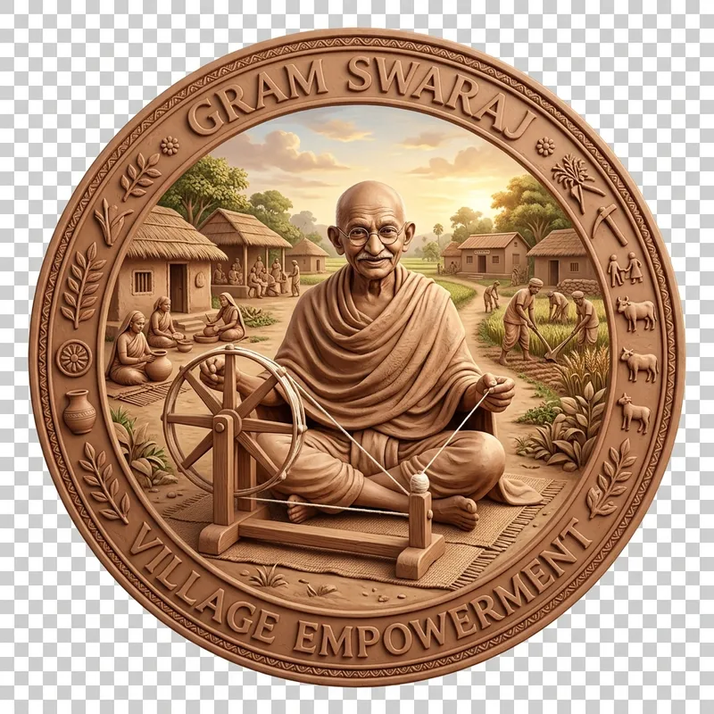
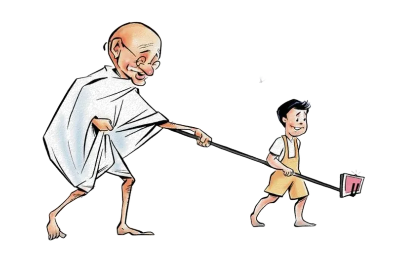

◆
डिजिटल ग्राम सचिवालय
●
●
●
उत्तर प्रदेश पंचायत सहायक यूनियन
उत्तर प्रदेश पंचायत सहायक यूनियन

उत्तर प्रदेश में ग्राम सचिवालयों के सक्रिय संचालन, त्वरित डिजिटल नागरिक सेवाओं और ग्रामीण आत्मनिर्भरता (Gram Swaraj) के धरातलीय परिवर्तन की एक ऐतिहासिक गाथा।
२५ वर्षों के ऐतिहासिक सपने को साकार कर ग्राम सचिवालयों को धरातल पर जीवित करने वाले मुख्य रणनीतिकार और हमारे डिजिटल सैनिक:
अदम्य इच्छाशक्ति और प्रशासनिक विज़न से ग्राम सचिवालयों को मिनी-सचिवालय बनाने का ऐतिहासिक संकल्प।
कुशल प्रशासनिक समन्वय, शासनादेशों का समयबद्ध निर्गमन और ग्रामीण बुनियादी ढांचे का अभूतपूर्व आधुनिकीकरण।

अल्प मानदेय और कठिन परिस्थितियों में भी ग्राम स्तर पर शासकीय नीतियों का शत-प्रतिशत जमीनी क्रियान्वयन।
दशकों से हमारे गांव प्रशासनिक उदासीनता, बंद पड़े पंचायत भवनों और धूल फांकती फाइलों के बीच उलझे हुए थे। ग्रामीणों को एक छोटे से प्रमाण पत्र के लिए भी मीलों दूर तहसील या ब्लॉक के चक्कर काटने पड़ते थे।
"जिस लक्ष्य को वर्षों तक व्यवस्था पूरी तरह स्थापित नहीं कर सकी, उसे ग्राम स्तर के डिजिटल योद्धाओं ने नई गति दी।"
"सुबह सूरज की पहली किरण के साथ ग्राम सचिवालय के पट खुलते हैं, कंप्यूटर ऑन होते हैं और ग्रामीणों की चिंताओं का डिजिटल समाधान होना शुरू हो जाता है।"
"अब गांव का नागरिक सेवाओं के लिए शहर पर निर्भर नहीं है।"
मुफ्त इलाज हेतु स्वास्थ्य सुरक्षा कार्ड निर्माण प्रविष्टि।
बुजुर्गों एवं माताओं के लिए सामाजिक सुरक्षा सहायता आवेदन।
आय, जाति, निवास प्रमाण पत्रों की त्वरित ऑनलाइन फीडिंग।
आवास लाभार्थियों की ऑनलाइन प्रविष्टि एवं जियो-टैगिंग।
ई-केवाईसी और लैंड-सीडिंग डेटा का जमीनी सत्यापन कार्य।
राज्य व केंद्र सरकार की समस्त लोक कल्याणकारी योजनाएं।
डिजिटल फैमिली डेटा प्रविष्टि और ऑनलाइन नकल निर्गमन।
पंचायत संपत्तियों और बुनियादी ढांचे का डिजिटल लेखा-जोखा।
उत्तर प्रदेश में ५ करोड़ से अधिक आयुष्मान कार्डों के विशाल लक्ष्य को प्राप्त करने में प्रत्येक पंचायत सहायक ने रात-दिन एक कर हर पात्र ग्रामीण तक मुफ्त इलाज की गारंटी पहुंचाई।
स्वास्थ्य सुरक्षा की यह क्रांति अब सीधे उत्तर प्रदेश के हर पिछड़े गांव तक पहुंच चुकी है।जब वैश्विक महामारी कोरोना (Covid-19) के दौरान पूरी दुनिया घरों में कैद थी, तब पंचायत सहायक गांवों में आशा बहुओं, निगरानी समितियों और स्वास्थ्य कर्मियों के साथ अग्रिम मोर्चे पर डटे हुए थे।
"जब सारी दुनिया रुकी हुई थी… तब उत्तर प्रदेश के गांवों में सेवा और समर्पण निरंतर जारी था।"
ग्राम पंचायतों को डिजिटल विकास सूचकांक (PDI) मानकों पर उत्कृष्ट बनाने में पंचायत सहायकों का महत्वपूर्ण योगदान है। जल, स्वच्छता, स्वास्थ्य, और शिक्षा जैसे प्रमुख संकेतकों का रीयल-टाइम डेटा संकलन अब डिजिटली किया जा रहा है।
🔥 ग्राम पंचायतें अब डिजिटल विकास केंद्र बन रही हैं।खुले में शौच मुक्त (ODF) सर्वेक्षण, शौचालय निर्माण की ऑनलाइन जियो-टैगिंग, और गांवों में नियमित स्वच्छता अभियान की मॉनिटरिंग में पंचायत सहायकों ने क्रांतिकारी भूमिका निभाई है।
🌱 "स्वच्छता गांव की गरिमा का नया अध्याय बनी।"
प्रत्येक ग्राम सचिवालय में स्थापित जन सुविधा केंद्रों के माध्यम से अब ग्रामीणों को १०० से अधिक सरकारी सेवाएं सीधे पंचायत कार्यालय से मिल रही हैं। इससे डिजिटल समावेशन (Digital Inclusion) को नई उड़ान मिली है।
"अब सुविधा के लिए शहर नहीं… गांव ही पर्याप्त है।"

तकनीक का हाथ, किसानों के साथ! पंचायत सहायकों ने कृषि विभाग के डिजिटल विज़न को अमलीजामा पहनाते हुए खेतों का स्थलीय डिजिटल सर्वेक्षण किया है।
🟢 खेती बाड़ी और कृषि रिकॉर्ड्स भी अब पूरी तरह पारदर्शी डिजिटल व्यवस्था से जुड़ चुके हैं।गांव के निसहाय और वृद्ध नागरिकों को समाज कल्याण विभाग की योजनाओं से जोड़कर उन्हें सम्मानजनक जीवन प्रदान करने में पंचायत सहायकों ने सक्रिय भूमिका निभाई है।
"सम्मान के साथ सामाजिक सुरक्षा तक पहुंच।"
जब शिक्षा और प्रोत्साहन की नीतियां सीधे हमारी बेटियों तक पहुंचीं, तब समाज का भविष्य भी मजबूत हुआ। पंचायत सहायकों ने समाज के अंतिम पायदान पर खड़ी बेटियों को शिक्षा योजनाओं से जोड़ा है।
🔥 जब योजनाएं बेटियों तक पहुंचीं… तब भविष्य मजबूत हुआ।पंचायत चुनाव हों, लोकसभा या विधानसभा चुनाव, मतदाता सूची का पुनरीक्षण (Voter List), बीएलओ टेक्निकल असिस्टेंस, और मतदान केंद्रों (Booths) के डिजिटल मैपिंग में पंचायत सहायकों ने रातों-रात जागकर लोकतंत्र को मजबूत बनाया है।
"लोकतंत्र की प्रक्रिया में भी ग्राम स्तर की व्यवस्थाएं सक्रिय रहीं।"
पंचायत सहायक केवल एक विभाग के नहीं, बल्कि शासन के समस्त महत्वपूर्ण विभागों के तकनीकी कार्यों के कुशल संपादन की रीढ़ बन चुके हैं।
बाएं बने नेटवर्क आरेख में किसी भी सरकारी विभाग पर **माउस ले जाएँ (Hover)** और देखें कि पंचायत सहायक किस प्रकार उनके जटिल तकनीकी कार्यों को गांव स्तर पर निष्पादित कर रहे हैं।
🌾 "सीमित संसाधनों में अनेक विभागों के तकनीकी कार्य।"
इतने बड़े प्रशासनिक और डिजिटल बदलावों को धरातल पर उतारने के बावजूद, इन कार्यों के पीछे रात-दिन मेहनत करने वाले पंचायत सहायक आज भी भारी उपेक्षा और मूक संघर्ष के शिकार हैं।
"इतने परिवर्तन के बावजूद… संघर्ष अब भी जारी है।"
इतने महत्वपूर्ण तकनीकी कार्यों और महंगाई के दौर में मात्र ₹६,००० प्रतिमाह मानदेय, जिससे एक परिवार का गुजारा करना भी असंभव है।
विभिन्न सरकारी विभागों के दैनिक सर्वे, तकनीकी डेटा प्रविष्टि, और समय सीमा के चलते निरंतर मानसिक दबाव और अतिरिक्त काम के घंटे।
धीमा इंटरनेट, पुराने पड़े तकनीकी उपकरण, और ग्राम स्तर पर कार्य निष्पादन के दौरान आने वाले तकनीकी अवरोधों का कोई उचित समाधान न होना।
हम उत्तर प्रदेश शासन से अत्यधिक विनम्रता किंतु पूर्ण संकल्प के साथ अपनी इन न्यायोचित मांगों को पूरा करने की अपील करते हैं।
वेतनमान ₹18,000–₹25,000 प्रतिमाह कर राज्य कोषागार से भुगतान सुनिश्चित हो।
कार्य की प्रकृति के आधार पर नियमित कर स्थायी कर्मचारी का दर्जा प्रदान किया जाए।
महिला पंचायत सहायको हेतु स्थान्तरण प्रणाली एवं नगर पंचायत प्रभावित पंचायत सहायको का समायोजन हो।
VDO एवं VPO के भर्ती में आरक्षण/वरीयता प्रदान की जाए।
I am dedicated to the digital empowerment of rural India and advocating for the rights of Panchayat Sahayaks. I conducted the complete research and development of this comprehensive report and simulator.
The soul of India— Mahatma Gandhi
lives in its villages.
Until the villages prosper,
the salvation of India
remains impossible.